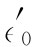
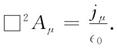
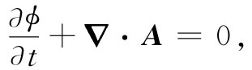

我们曾在§18-6中碰到过达朗贝尔算符，但没有给它这一名字。在那里对于那些势所求得的微分方程可以用新的符号表示法写成：
这两个方程中的右边四个量为ρ，jx ，jy 及jz ，再各除以∈0 。如果在所有参照系中都采用相同的电荷单位，则这个 是在各坐标系中都相同的一个普适常数。因此，那四个量ρ/∈0 ，jx /∈0 ，jy /∈0 及jz /∈0 也就会如同一个四维矢量那样变换。我们可将其写成jμ /∈0 。当坐标系改变时达朗贝尔算符不会改变，因而ϕ，Ax ，Ay ，Az 四个量也必须 像四维矢量那样变换 ——这意味着它们就是一个四维矢量的分量。简单地说，
Aμ =（ϕ，A）
是一个四维矢量。我们所称的标势和矢势，它们实际上就是同一个物理客体的不同方面。它们合成为整体。而倘若把它们合起来看，则这个世界的相对论不变性就很明显了。我们称Aμ 为四维势 。
在四维矢量符号表示中，式（25.21）中的两方程简单地变成
 （25.22）
这一方程的物理内容恰好同麦克斯韦方程组相同。但可以把它改写成这么一个优美形式实在令人感到有些喜悦。这个漂亮形式也有其本身意义，它直接证明了在洛伦兹变换之下电动力学的不变性。
要记住，式（25.21）之所以能够由麦克斯韦方程组推导而得，只是由于我们加上了规范条件
 （25.23）
这不过是讲▽μ Αμ =0，这规范条件说明四维矢量Aμ 的散度为零。这一条件称为洛伦兹条件 。因为它是一个不变性条件，所以是很方便的，从而使麦克斯韦方程组对所有参照系都能保持式（25.22）那种形式。